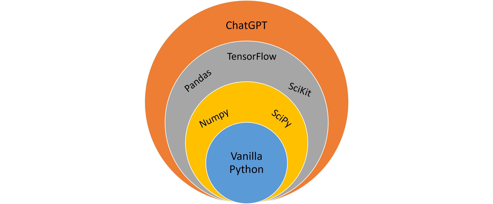

Before proceeding with the libraries, it is worth mentioning that if you write Python code without importing libraries, it is usually referred to as vanilla Python, i.e. Python without flavors. You can achieve a lot using vanilla Python, but you will have to write much more code compared to what you would do if you imported a library. This also means that you can import a library and never write vanilla Python to achieve what you want. In many ways you can think of a library as an interface to Python, as illustrated in figure 1. Libraries also have different levels of complexity, such as the Pandas library, which is almost like its own programming language. Libraries like Pandas and Numpy work on groups of data, e.g. in vanilla Python x+y would be to take a single number and add to another (e.g. 1+3=4), whereas in Pandas and Numpy we would add one array of numbers to another (e.g. [1,2,3]+[5,6,7]=[6,8,10]).
Figure 1: Different levels of interacting with Python.

Due to the large amount of libraries in Python, it is possible to achieve similar things in Python in many different ways. This means that if you are working with e.g. the Pandas library and need help, you should search ''How can I achieve this in Pandas?'', instead of ''How can I achieve this in Python?''. The reason is that there is a high chance that there already is a solution to your problem within the library you use, this solution will be much easier than relying on another library to achieve what you want.